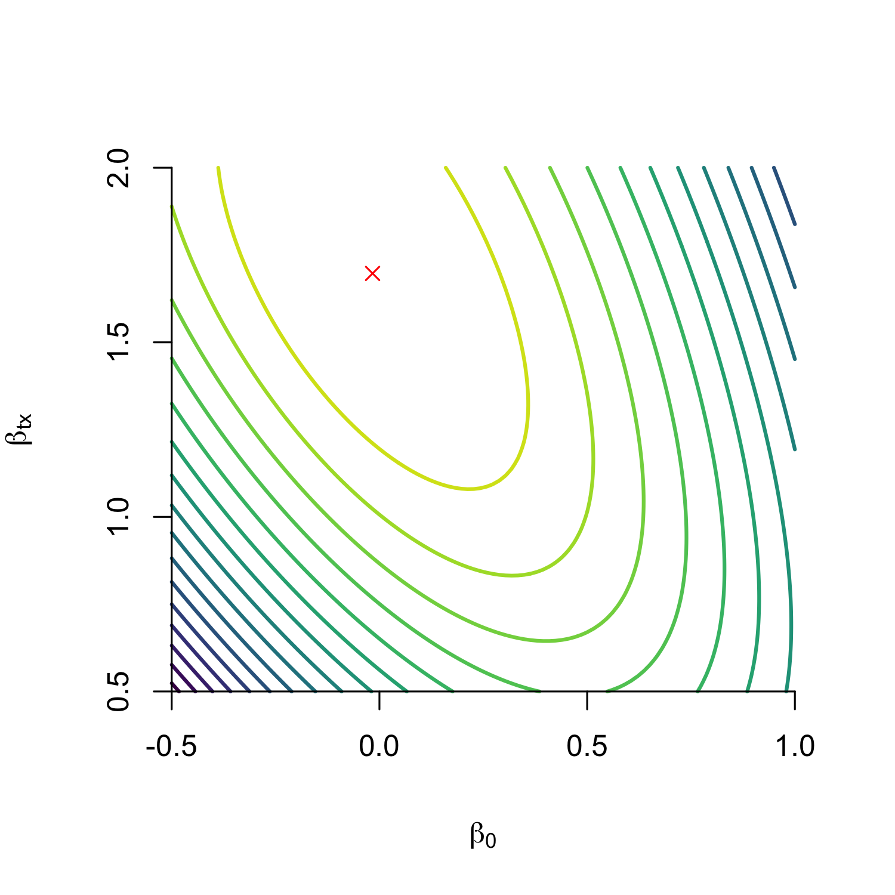
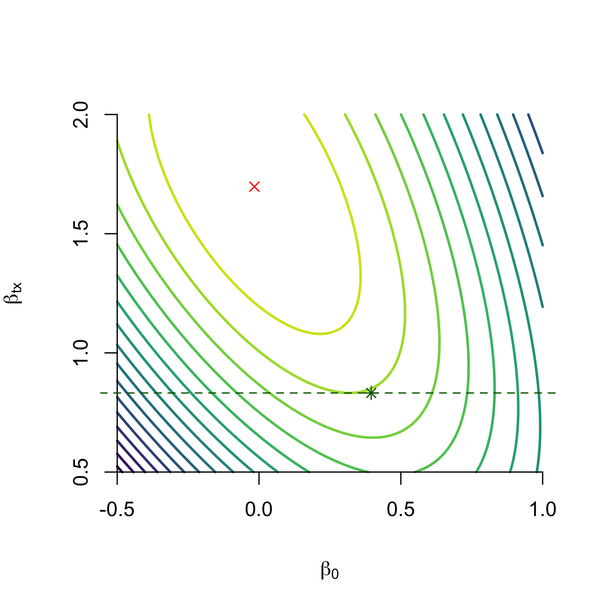
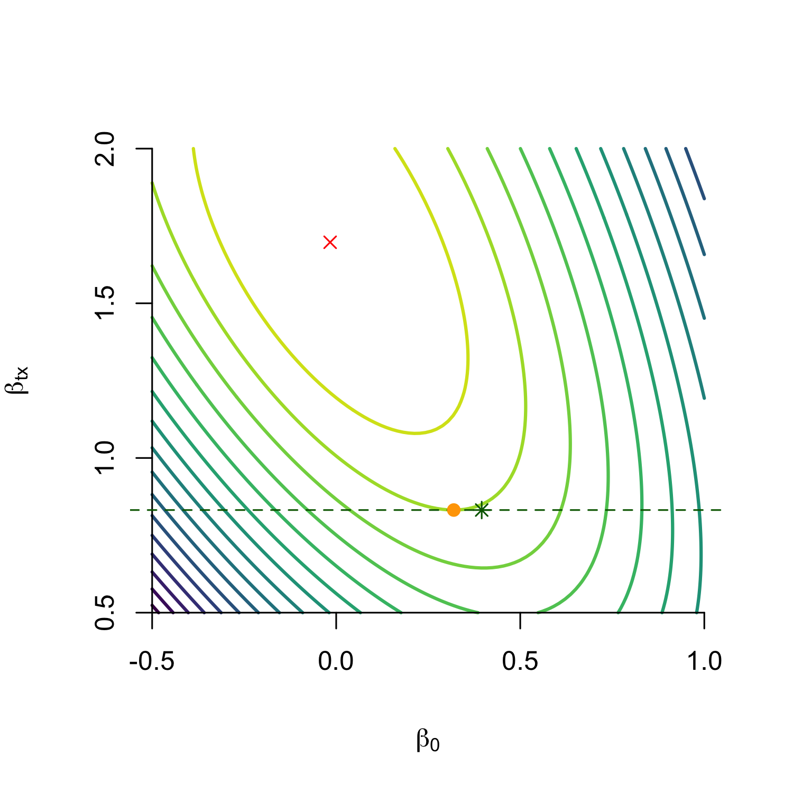
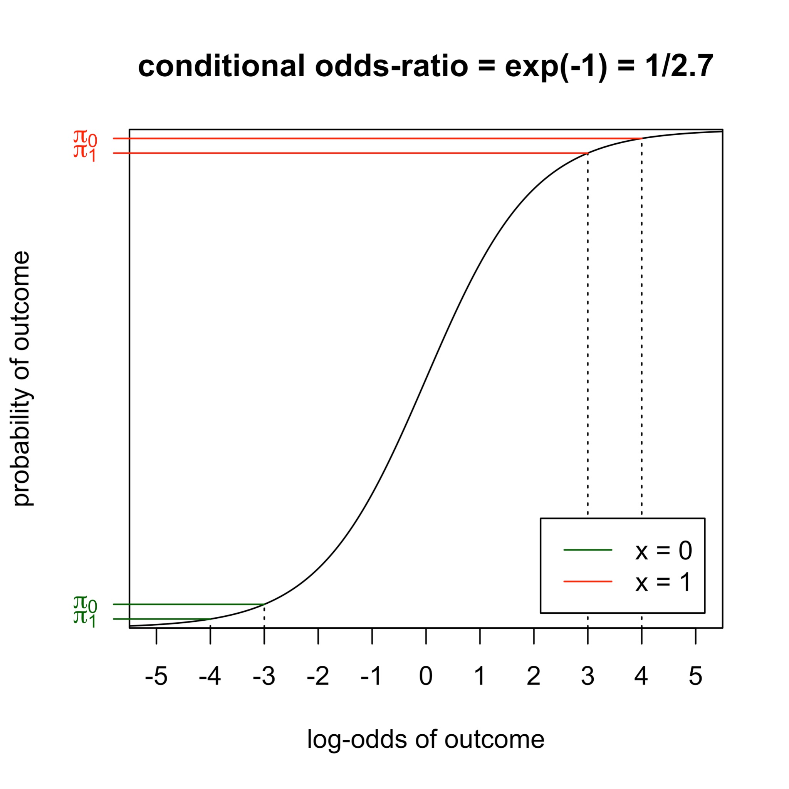
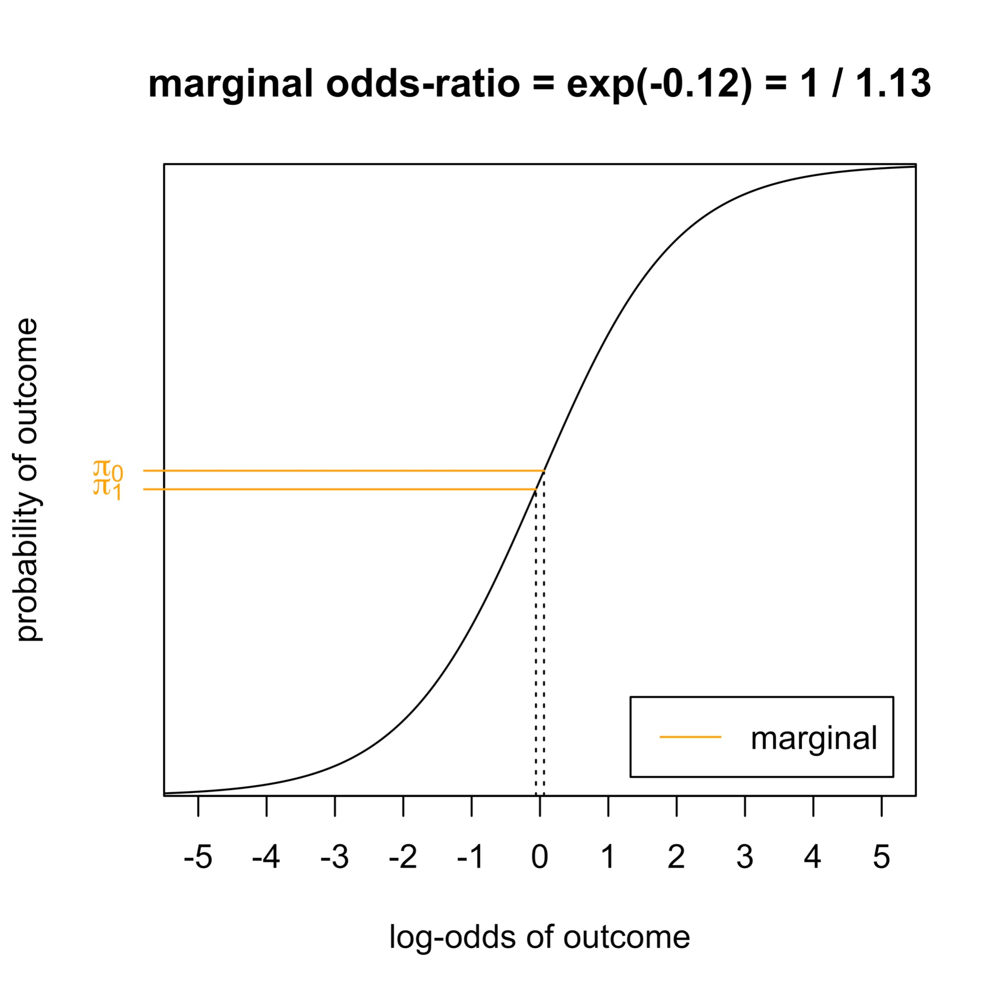
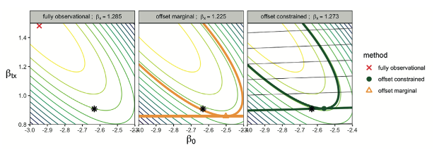
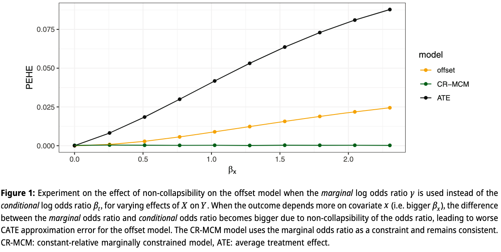
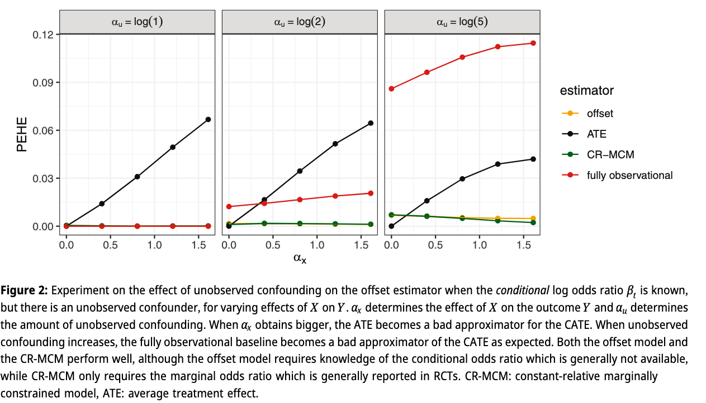
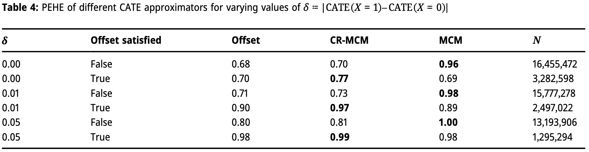

CATE estimation from observational data plus randomized evidence
Department of Data Science Methods, Julius Center, University Medical Center Utrecht
2026-06-23
Treatment decisions compare two potential outcomes: \[Y_1 \quad \text{versus} \quad Y_0\]
The clinically useful quantity is often the conditional average treatment effect: \[\tau(x) = E(Y_1 - Y_0 \mid X=x)\]
Patients and care-givers prefer this to be on an absolute (probability) scale (Murray et al. 2018)
Example: cardiovascular risk with or without cholesterol-lowering medication, given a patient’s history.
\[\text{ATE} = E[\tau(x)]\]
So the question is:
Can we combine observational outcome models with treatment effects known from randomized trials?
For binary outcomes, trials may report several valid causal summaries:
\[ \begin{aligned} \text{risk difference} &= P(Y_1=1)-P(Y_0=1),\\ \text{risk ratio} &= \frac{P(Y_1=1)}{P(Y_0=1)},\\ \text{odds ratio} &= \frac{\text{odds}(Y_1=1)} {\text{odds}(Y_0=1)}. \end{aligned} \]
(and their conditional variants)
Combining RCT data with observational data requires an assumption of transportability, we study transportability of the odds-ratio, assuming we know it from an external RCT
\[ E(Y_0\mid X=x) \quad \Longrightarrow \quad \tau(x) = \text{odds}^{-1}(\text{OR}_T \text{odds}(Y_0 | X)) - E(Y_0\mid X=x) \]
An offset model fixes the treatment coefficient to the value known from randomized evidence and estimates the remaining parameters from observational data.
For a logistic outcome model:
\[ \mathrm{logit}\{P(Y=1\mid X=x,T=t)\} = \beta_0 + \beta_x^\top x + \beta_t t. \]
The usual offset approach plugs in \(\beta_t=\log(\mathrm{OR}_T^{RCT})\).
This is already close to what some clinical prediction tools do in practice Alaa et al. (2021), some of which are recommended for use by clinical guidelines (Cardoso et al. 2019)
assume a model exists, such that \[ \mathrm{logit}\{P(Y=1\mid X=x,T=t)\} = \beta_0 + \beta_x^\top x + \beta_t t. \]
and that \(\beta_t\) is known from trials
would we recover the correct \((\beta_0, \beta_x)\) by fitting an offset model on observational data?



We derive expression for gradient of log-likelihood for \(\beta_0\) at ground truth and find its zero iff there is no unobserved confounding
Once \(X\) enters the model, two issues appear at the same time:
The second issue matters even without confounding.


Conundrum:
RCTs usually provide a marginal (log) odds ratio: \(\log \gamma = \log \frac{\text{odds}(E[Y_1])}{\text{odds}(E[Y_0])}\)
The offset model needs a conditional odds ratio.
The mismatch grows exactly when CATE variation becomes more useful.
Estimate all model parameters, including \(\beta_t\), but force the fitted model to reproduce the randomized marginal treatment effect in the target population.
\[ \begin{aligned} M_n(\theta) &=\mathrm{logit}\left\{\frac{1}{n}\sum_{i=1}^{n} P_\theta(Y=1\mid X=x_i,T=1)\right\} \\ &\quad-\mathrm{logit}\left\{\frac{1}{n}\sum_{i=1}^{n} P_\theta(Y=1\mid X=x_i,T=0)\right\}. \end{aligned} \]
Fit the observational outcome model subject to:
\[ M_n(\theta) = \hat\gamma_{RCT}, \]
where \(\hat\gamma_{RCT}\) is the marginal log odds ratio reported by the trial.
Equivalently:
\[ \max_{\theta} \; \ell_{obs}(\theta) \quad \text{subject to} \quad M_n(\theta)-\hat\gamma_{RCT}=0. \]
The model can learn the conditional treatment coefficient that best explains the observational outcomes.
But it is only allowed to do so if the implied randomized experiment in the current population agrees with the trial evidence.
Why constrain the odds-ratio? Need a measure that is likely to be transportable between settings

\[ \max_{\theta} \; \ell_{obs}(\theta) \quad \text{subject to} \quad M_n(\theta)-\hat\gamma_{RCT}=0. \]
The paper used an increasingly strong quadratic penalty:
\[ \ell_{obs}(\theta) - \lambda\{M_n(\theta)-\hat\gamma_{RCT}\}^2. \]
Algorithm:
This treats the trial estimate as effectively exact once the penalty becomes strong.
\[\text{PEHE}(\hat{\tau}) = E_x [(\tau(x) - \hat{\tau(x)})^2]\]
\[\text{PEHE}(\text{ATE}) = \text{Var}(\text{CATE})\]


\[\delta := | \text{CATE}(X=1) - \text{CATE}(X=0) | \]
\[\text{Var}(\text{CATE}) = 0.25 \delta^2\]

\[ \ell_{obs}(\theta) - \frac{1}{2} \left( \frac{M_n(\theta)-\hat\gamma_{RCT}} {\mathrm{SE}(\hat\gamma_{RCT})} \right)^2. \]
©Wouter van Amsterdam — WvanAmsterdam — wvanamsterdam.com/talks